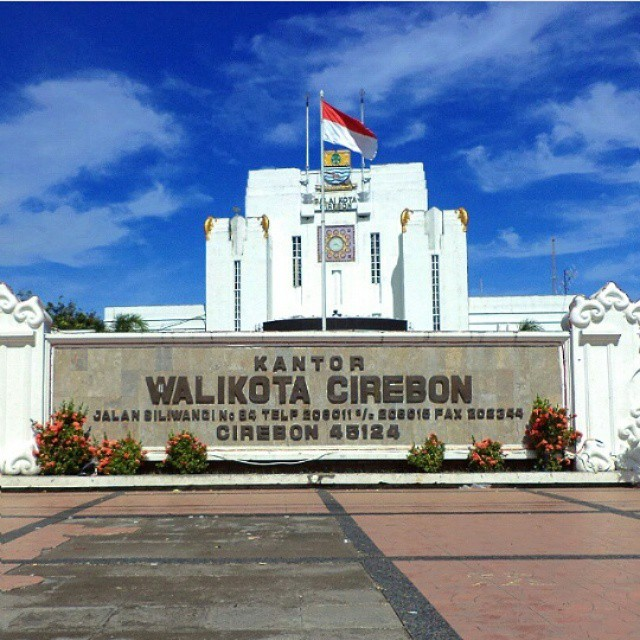
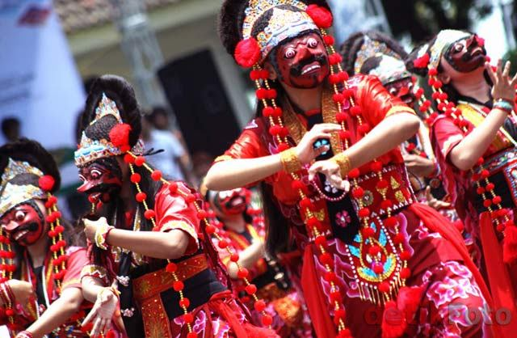
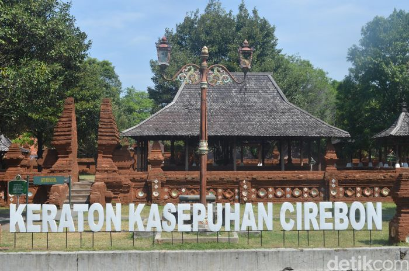
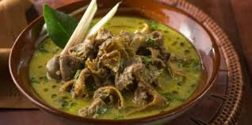
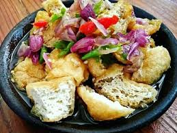
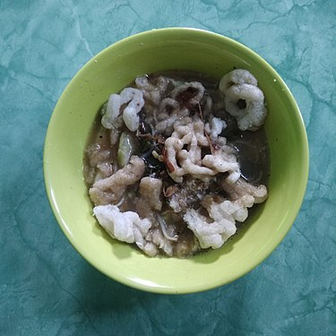

Tentang Kota Cirebon

Kota Cirebon adalah salah satu kota yang berada di Provinsi Jawa Barat, Indonesia.
Kota ini berada di pesisir utara Pulau Jawa atau yang dikenal dengan jalur pantura
yang menghubungkan Jakarta-Cirebon-Semarang-Surabaya.
Jumlah penduduk kota Cirebon pada tahun 2018 berjumlah 316.277 jiwa.
Pada awalnya Cirebon berasal dari kata sarumban, Cirebon adalah sebuah dukuh kecil
yang dibangun oleh Ki Gedeng Tapa. Lama-kelamaan Cirebon berkembang menjadi sebuah desa
yang ramai yang kemudian diberi nama Caruban (carub dalam bahasa Cirebon
artinya bersatu padu). Diberi nama demikian karena di sana bercampur para pendatang
dari beraneka bangsa di antaranya Sunda, Jawa, Tionghoa, dan unsur-unsur budaya bangsa Arab,
agama, bahasa, dan adat istiadat. kemudian pelafalan kata caruban berubah lagi menjadi
carbon dan kemudian cerbon.
Selain karena faktor penamaan tempat penyebutan kata cirebon juga dikarenakan sejak awal
mata pencaharian sebagian besar masyarakat adalah nelayan, maka berkembanglah pekerjaan
menangkap ikan dan rebon (udang kecil) di sepanjang pantai, serta pembuatan terasi,
petis dan garam. Dari istilah air bekas pembuatan terasi atau yang dalam bahasa Cirebon
disebut (belendrang) yang terbuat dari sisa pengolahan udang rebon inilah berkembang
sebutan cai-rebon (bahasa sunda: air rebon), yang kemudian menjadi Cirebon.
Tari Topeng

Tari topeng Cirebon adalah salah satu tarian di wilayah kesultanan Cirebon.
Tari Topeng Cirebon, kesenian ini merupakan kesenian asli daerah Cirebon,
termasuk Subang, Indramayu, Jatibarang, Majalengka, Losari, dan Brebes.
Disebut tari topeng karena penarinya menggunakan topeng di saat menari.
Pada pementasan tari Topeng Cirebon, penarinya disebut sebagai dalang, dikarenakan mereka
memainkan karakter topeng-topeng tersebut.
Tari topeng ini sendiri banyak sekali ragamnya dan mengalami perkembangan dalam hal gerakan,
maupun cerita yang ingin disampaikan. Terkadang tari topeng dimainkan oleh satu penari tarian solo,
atau bisa juga dimainkan oleh beberapa orang.
Thomas Stamford Raffles dalam bukunya The History of Java mendeskripsikan bahwa kesenian topeng Cirebon
merupakan penjabaran dari cerita Panji dimana dalam satu kelompok kesenian topeng terdiri dari dalang
(yang menarasikan kisahnya) dan enam orang pemuda yang mementaskannya diiringi oleh empat orang musisi gamelan
(bahasa Cirebon: Wiyaga)
Bangun Sejarah Cirebon

Keraton Kasepuhan adalah keraton yang terletak di kelurahan Kesepuhan, Lemahwungkuk, Cirebon.
Makna di setiap sudut arsitektur keraton ini pun terkenal paling bersejarah. Halaman depan keraton ini
dikelilingi tembok bata merah dan terdapat pendopo di dalamnya.
Keraton Kasepuhan adalah bangunan yang dahulu bernama keraton Pakungwati yang pernah menjadi pusat pemerintahan
Kasultanan Cirebon.
Keraton ini memiliki museum yang cukup lengkap dan berisi benda pusaka dan lukisan koleksi kerajaan.
Salah satu koleksi yaitu kereta Singa Barong yang merupakan kereta kencana Sunan Gunung Jati.
Kereta tersebut saat ini tidak lagi dipergunakan dan hanya dikeluarkan pada tiap 1 Syawal untuk dimandikan.
Kuliner Kota Cirebon
Kota Cirebon merupakan salah satu kota di Jawa Barat yang memiliki beragam kuliner khas yang menggugah selera.
Kuliner Cirebon terkenal dengan rasanya yang gurih dan pedas, serta menggunakan berbagai macam rempah-rempah khas.
Makanan khas Cirebon ini menjadi salah satu daya tarik wisata yang membuat wisatawan penasaran untuk mencobanya.
Empal Gentong

Empal Gentong adalah makanan khas masyarakat Cirebon, Jawa Barat.
Makanan ini mirip dengan gulai (gule) dan dimasak menggunakan kayu bakar (pohon mangga) di dalam gentong
(periuk tanah liat).[butuh rujukan] Daging yang digunakan adalah usus, babat dan daging sapi.
Empal gentong berasal dari Kabupaten Cirebon. Makanan khas Cirebon lainya
masih ada lagi yaitu tahu gejrot dan docang.
Selain menggunakan kayu bakar dan gentong, makanan ini disajikan menggunakan kucai (Allium tuberosum)
dan sambal berupa cabai kering giling.[butuh rujukan] Empal gentong dapat disajikan dengan nasi atau juga lontong.
Lontong menurut orang Cirebon hanyalah beras yang dimasukan kedalam daun pisang yang sudah dibentuk silinder,
tidak ada campuran lainnya, kemudian direbus selama 4 jam.
Tahu Gejrot

Tahu Gejrot adalah makanan khas Cirebon, Indonesia yang terbuat dari tahu dan bumbu lainnya.
Tahu gejrot terdiri dari tahu yang sudah digoreng kemudian dipotong agak kecil lalu dimakan dengan kuah
yang bumbunya cabai, bawang putih, bawang merah, gula. Biasanya disajikan di layah kecil.
Tahu gejrot juga merupakan jajanan khas daerah Cirebon yang digemari di kalangan anak-anak dan orang dewasa,
karena sensasi rasanya yang khas. Tahu gejrot ialah tahu yang dipotong kecil-kecil kemudian ditaruh
di atas piring kecil dan tahu yang digunakan ialah tahu sumedang. Cara memakannya pun unik,
yakni dengan satu lidi kecil kemudian tusuk bagian tahu yang telah dipotong-potong itu.
Saat ini tahu gejrot telah menyebar ke seluruh Indonesia seperti Jakarta, Malang, Depok, Surabaya,
dan beberapa tempat di kota-kota besar lainnya di Indonesia.
Docang

Docang adalah makanan tradisional yang berasal dari Cirebon dan sekitarnya yang terbuat
dari campuran potongan lontong, parutan kelapa, daun singkong, daun kucai, toge, dan kerupuk.
Bahan-bahan tadi kemudian disiram dengan kuah dage atau oncom.
Secara harfiah, docang berasal dari bahasa Cirebon singkatan dari dua kata yaitu:
bodo dan kacang (tauge). Docang merupakan perpaduan dari lontong, daun singkong, toge, dan kerupuk,
yang berkolaborasi sayur oncom yang terbuat dari ampas tahu dicampur sedikit bungkil
kacang tanah (sisa perasan dijadikan minyak) yang disebut gempa (yang dihancurkan)
serta dikombinasikan dengan parutan kelapa muda.